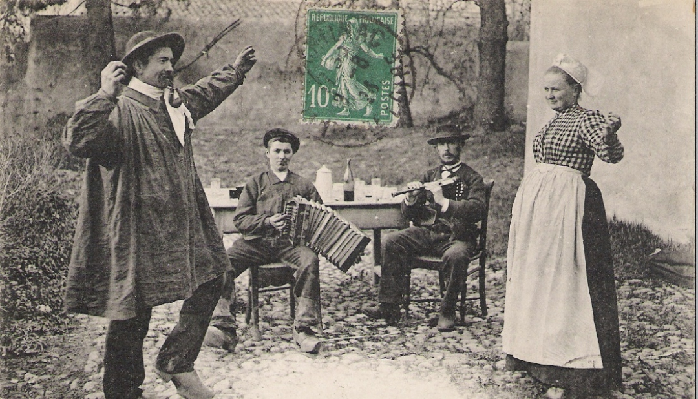
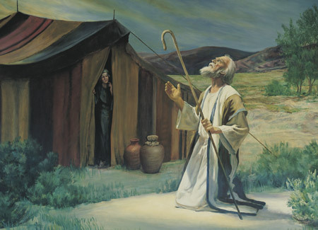
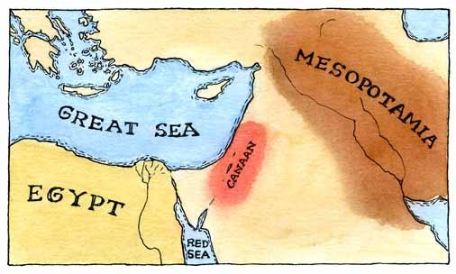

chapter3.2--handout
Background Information
Panthéon 先贤祠
Five nights a week the working people of the Pantheon quarter danced there.（每周有五个晚上，先贤祠区的劳动人民们都在这里跳舞。）
这里提到的Panthéon（先贤祠）其实就在我们介绍过的巴黎左岸的拉丁区（Latin Quarter）. Panthéon是法语，但最早来自希腊语，含义是“所有的神”（pan表示“所有的，泛的”，theo表示“神”）. 这类的建筑，通常以供奉诸神而著称。例如公元前五世纪古希腊人修筑的雅典巴特农神庙（Parthenon）, 便是供奉着这世上所有的神灵。类似的建筑，意大利也有一所，也即我们所熟知的“万神殿”（也叫Pantheon）.
先贤祠原是路易十五时代建成的一座教堂，供奉着巴黎的守护女神——“圣热纳维耶芙” （Sainte Geneviève）的圣物，1791年被收归国有脱离宗教后，改为埋葬“伟人”的墓地；1814年到1830年间，它又归还教会；现在是永久纪念法国历史名人的圣殿。
先贤祠中的艺术装饰非常美观，其穹顶（dome）上的大型壁画是名画家安托万·格罗特创作的。1830年“七月革命”之后，绘画的主题改变，先贤祠具有了“纯粹的爱国与民族”特性。
先贤祠内安葬着伏尔泰（Voltaire）、卢梭（Rousseau）、维克多·雨果（Victor Hugo）、爱弥尔·左拉（ Émile Zola）、居里夫人（Marie Curie）和大仲马（Alexandre Dumas）等。
Bal Musette 手风琴舞会
The dancing-club was a bal musette in the Rue de la Montagne Sainte Genevieve.（这家跳舞俱乐部里跳的都是手风琴舞，位置就在圣杰尼维耶弗山路上。）
Jake一伙人吃完晚饭后的消遣是去一家俱乐部里跳手风琴舞。这里的bal musette是在1880s风靡于巴黎的一种音乐和舞蹈形式，特点就是以手风琴（accordion）为主角。
这种风格并不是巴黎本地的产物，而是来自法国中部的奥弗涅大区（Auvergne）的地方舞蹈和民乐。当时很多奥弗涅人（Auvergnats）居住在法国的第5、11、12区（arrondissement）, 第5区也就是我们上面提到的先贤祠区，这一片都属于拉丁区的范围。他们在自己的居住区内开了很多的酒吧，里面跳的就是他们民间的bourrée舞——节奏轻快，还有手风琴伴奏。

手风琴舞大受欢迎的原因是简单易学、移动敏捷，而且舞步性感，也不需要太大的场地，在小酒吧里空间正合适。
这些地方虽然主要是穷人的活动场地，但也经常有法国的上层名流来到这里找乐子。而且店主们有时候会为了这些“大老板”的利益，故意制造警察突袭的恐慌（some establishments even staged mock police raids for their patrons' benefit）, 好让其他人都被吓跑。
到1945年，手风琴舞已经走到了法国时髦的最前沿，还掀起了一股对于手风琴舞者的追星潮。但是到了1960年，它的热度就开始急剧褪减（declined drastically）. 今天手风琴舞在融入现代元素后，也展露出了复兴的劲头（a revival has begun）.
Vocabulary
faculty
n. 能力，才能；全体教职员
原文："Oh, how charmingly you get angry," he said. "I wish I had that faculty."
“呀，你发起脾气来真讨人喜欢，”他说。“我要有你这套本领就好了。”
💧faculty我们最熟悉的意思是表示“（学校的）全体教员”；此外它还可以指“（身体的）机能”，比如：the faculty of sight是“视觉官能”；
💧原文中的faculty指“才能，技能”（talent）, 比如：
She had a great faculty for absorbing information.
她吸收信息的能力很强。
possess
vt. 拥有;掌握，懂得;主宰;缠住，迷住
原文："What possessed you to bring her?"
“什么东西迷住了你，让你把她带来的？”
💧possess在这里是双关：首先是指“占据某人的头脑，迷住”（to occupy fully the mind of）, 比如：
The dancers were possessed by the music.
舞者们完全沉浸在音乐里了。
💧其次是指“驱使某人做”（to force sb to do）, 一般是问话者对于对方做的一件蠢事表示无法理解，比如：
What on earth possessed her to do it?
到底是什么让她干出这种事的？
Crush Your Problems
1、"My God," Georgette said. "What a box to sweat in!"
“我的上帝，”乔杰特说。“屋里活像个蒸笼！”
💧表达精讲
"What a box to sweat in!"不是指大家在盒子里大汗淋漓。box有“包厢”（一般空间狭小）的意思，比如剧院里的包厢就是用box来代指。但这里的box还不只是指包厢，结合后面的sweat, 这里指的很可能是sweat box, 也就是桑拿房（sauna bar）.
作者没有直接写明是sweat box其实也是为了营造一定的想象空间，同时利用box的多个歧义：“盒子”、“包厢”等，来暗示这个俱乐部里边空间很小，人挤人的非常闷热。
2、She looked very lovely and she was very much with them.
她模样怪可爱的，还和他们打成了一片。
💧表达精讲
she was very much with them 可能有点难理解，这里very much是俚语的一种用法，表示强调，我们先来看一个句子：She is very much in control of the situation.（她正掌控着情况。）
因此原文里very much可以看成是强调she was “with” them. 也就是她跟他们在一起一点都不奇怪违和，看上去很玩得来。
3、 I know they are supposed to be amusing, and you should be tolerant, but I wanted to swing on one, any one, anything to shatter that superior, simpering composure.
我知道人们总认为他们是在逗乐，得忍着点，但是我想揍倒他们一个，随便哪一个，来砸掉那种目中无人、傻笑中透着泰然自若的神情。
💧表达精讲
①be supposed to 在这里不是“应该去做”，而是“认为，觉得”，我们可以通过两个例句进行区分：
I’m not supposed to tell anyone. 我不能告诉任何人的。
He’s supposed to be very clever. 据说他非常聪明。
②to swing on one, any one, anything to shatter...调整语序后是：to swing anything on one, any one, to shatter...（不定式结构在这里作目的状语）；swing sth on/at sb表示“抡起……向某人砸去”，swing本义是“摇摆，摇动”，所以表示击打这个动作的时候就是抡圆了胳膊朝对方挥过去；这里的sth在原文里就是anything;
③to shatter that superior, simpering composure “来砸掉那种目中无人、傻笑中透着泰然自若的神情”；shatter表示“使粉碎，破灭”，比如“打破宁静”就是shatter the silence/peace；superior也就是“高傲的，有优越感的”；simpering指“傻笑的”，但一般带有贬义，形容的是很矫揉造作地装无辜的傻笑；composure表示“冷静，镇定”（calmness）.
Jake看到和Brett同行的这些男性对Georgette的态度的非常轻佻，更加对他们感觉厌恶和不满。比如他们直呼Georgette为harlot（妓女，荡妇），以及故意跟她跳舞捉弄她（"I'm going to dance with her, Lett. You watch me."The tall dark one, called Lett, said: "Don't you be rash." The wavy blond one answered: "Don't you worry, dear."）
4、I was a little drunk. Not drunk in any positive sense but just enough to be careless.
我已有几分醉意。并没有真醉，但说起话来已经到了口不择言的程度。
💧表达精讲
①in any positive sense “没有真的”；positive在这里表示“肯定的，确信的”（certain）, 还可以直接作为问题的答语，比如：‘Are you sure about that?’ ‘Positive.’（“那事你能肯定吗？”“能。”）
②but just enough to 直译是“但是刚好能够做”，在这里应该理解为“但是已经到了什么样的程度”，两种理解的语气不同；第一种是你希望有足够的什么东西，而当下的情况是刚好够；第二种则相反，你反而不希望有那么多。所以这里的语气表示的是：虽然没有完全醉，但已经足够到不择词句的地步了。
5、"What's the matter with you? You seem all worked up over something?"
“你怎么啦？好像被什么事惹火了。”
💧表达精讲
①all 在这里表示“非常，甚”（pretty much）, 主要用于强调不好的情形，常和too连用，比如：In these conditions it was all too easy to make mistakes. 在这些情况下很容易犯错。
②work sb up 表示“激起某人情绪”（to arouse one's emotions）, 尤其指“使某人生气”，后面的over表示“因为什么事情”，比如：
I think you're working yourself up over nothing. I'm sure the doctor will tell you it's nothing.
我觉得你是在毫无理由地发脾气。我敢肯定，医生会告诉你这其实没什么大不了的。
6、"Hello, Brett," I said. "Why aren't you tight?"
“嗨，勃莱特，”我说。“你怎么没喝醉？”
💧表达精讲
tight 在这里是一种过时的俚语表达，意思是“喝醉的”（drunk）. 再为大家拓展几个关于tight的地道用法：
表示“（胸/胃/喉）感觉憋闷的，不适的”：这个很好理解，feel tight也就是感觉某个部位难受地发紧”；比如：
Before she went on stage her chest felt tight and her throat hurt.
她上台前胸口发闷，喉咙疼痛。
表示“生气的，担忧的”：可以和“紧闭双唇”这个动作联系起来，因此tight-lipped不是因为闷闷不乐，就是因为太过担心而勉强挤出笑容；比如：
‘Look, I’m sorry…,’ she said, forcing a tight smile.
“噢，我很抱歉……”她说道，勉强挤出一丝生硬的笑容。
7、Brett was damned good-looking. She wore a slipover jersey sweater and a tweed skirt, and her hair was brushed back like a boy's. She started all that. She was built with curves like the hull of a racing yacht, and you missed none of it with that wool jersey.
勃莱特非常好看。她穿着一件针织套衫和一条苏格兰粗呢裙子，头发朝后梳，像个男孩子。这种打扮是她开的头。她身材的曲线如同赛艇的船身，羊毛套衫使她的整个体型毕露无疑。
💧表达精讲
①a slipover jersey sweater “一件针织套衫”；slipover是“套衫”的意思，slip over作动词短语是“漫不经心，套”的意思，所以slipover就是因为这种衣服的穿着方式很简单而得名，也可以称作是pullover; jersey和sweater都是“针织衫”的意思，主要指套头无扣的那种；
②a tweed skirt “一条苏格兰粗呢裙子”，我们在盖茨比里也提到了苏格兰特色的裙子，但那个是花呢的，叫作plaid skirt.
③the hull of a racing yacht “赛艇的船身”；hull指“船体，船身”，比如steel-hulled表示“船体是钢质的”；此外hull还可以指“种子，谷物等的外壳”（husk）.
④miss none of it “一点都不会错过”，it在这里指Brett的body curves.
这一段在语言上其实别具心裁，比如she在句首的反复使用，这在一般情况下是不符合英语的简洁和流畅规则的。但在这里的效果是强调Brett深深勾住了Jake的视线，一反他在之前情节中的颓废无聊，暗示了Brett对他的特殊性。
Content Analysis
Jake和Georgette跟着大伙一起到了手风琴舞会上。但Jake显然提不起兴致，里面又小又热，所以他也不跳舞，就站在门口的过道上吹外面的凉风（I drank a beer, standing in the doorway and getting the cool breath of wind from the street）.
直到门口停下了两辆出租车，走出来的是一个叫Brett的女人，还有她的“男伴们”。Jake看到他们的妆容打扮莫名怒火中烧（I was very angry.）而且他还强调了一句一直以来都是如此（Somehow they always made me angry）. 这里其实暗藏了一条线索，Jake是个恐同者。我们可以从他对这群男伴的描述中看出来——
💧Clue 1: Jake is homophobia.
Evidence 1: As they went in, under the light I saw white hands, wavy hair, white faces, grimacing, gesturing, talking.
当他们挤眉弄眼、比比划划、七嘴八舌地往里走的时候，在灯光下我看清他们的白手、卷发和白脸。
Jake在这里强调white是带着鄙夷的，比如他们可能只是在脸上擦脂抹粉了，但在Jake看来就是全身能露的出来的地方都是白花花的。以及三个词grimacing, gesturing, talking的连用也表明了他的厌恶：在语言层面上，-ing形式本身就有表示某件事持续进行而让人很厌烦的意思。
Evidence 2: When I came back to the Bal there was a crowd on the floor and Georgette was dancing with the tall blond youth, who danced big-hippily, carrying his head on one side, his eyes lifted as he danced.
当我回到舞厅的时候，舞池里挤满了人，乔杰特正和那个高个子的金发小伙在跳舞。他跳舞的时候，使劲扭动臀部，歪着脑袋，眼睛朝上斜吊着。
big-hippily是一个很冒犯人的词，hippy（也可以拼作hippie）指“臀部大的”，而且主要是用来形容女性。这里是Jake很不满这个金发小伙跳舞的时候拼命扭捏身姿。
大家可能疑惑的另一个点是，为什么Jake看到Brett和这些男伴在一起也会如此不舒服呢？比如他颇具挖苦地说了一句she was very much with them（她和他们打成一片），以及在Brett首次出现的时候，Jake形容她的口吻就像是俩人已经认识一样（with hem was Brett）. 这里作者再次向我们隐瞒了一个线索，也就是Jake和Brett其实是一对旧情人。我们可以在他们虽然看似平淡但实则暗流涌动的对话里找到佐证——
💧Clue 2:Jake and Brett used to be intimate.
Evidence 1: Dancing, I looked over Brett's shoulder and saw Cohn, standing at the bar, still watching her.
"You've made a new one there," I said to her.
"Don't talk about it. Poor chap. I never knew it till just now."
"Oh, well," I said. "I suppose you like to add them up."
跳舞的时候，我从勃莱特的肩膀上望过去，只见科恩在酒吧柜边站着，仍然盯着她看。
“你又迷住了一个人，”我对她说。
“别谈这个。可怜的家伙，我也是刚刚才发觉。”
“哦，好嘛，”我说。“依我看你是多多益善吧。”
虽然Jake很想装出若无其事的口吻，但这股打翻了醋坛子的酸味读者透着纸就能嗅到了。以及一直到离开俱乐部之前，他的视线都没离开过Cohn和Brett, 比如他一直在反复强调，Brett要么拿着酒杯要么站在吧台边上，而这时候Cohn都在看着她：
She stood holding the glass and I saw Robert Cohn looking at her.
Brett stood by the bar. Cohn was talking to her.
说明Jake心里极为介意Cohn对Brett也产生了好感，当然不可避免地我们的故事从此就要拉开一个感情三角了。
Evidence 2: "Oh, darling, I've been so miserable," Brett said.
“哦，亲爱的，我是多么不幸啊，”勃莱特说。
这句话作为章节的结尾也颇有深意。在俱乐部的时候，Brett展现出的都是轻松愉快的样子。直到她和Jake一起坐上出租车远离了人群之后，Brett才开始表露自己的心迹。比如她一言不发地紧握住了Jake的手（Brett pressed my hand hard）, 以及最后的这句话，她突然说自己过得其实很糟糕。
至此前三章其实就是作者为后面作的铺陈，接着冰山下面的部分也会渐渐显露出来。这里面有主角们沉重的过去，以及解释了他们如何变成了今天的样子。我们一起期待吧~
Today's Bonus
💧圣经故事：上帝的应许之地
He looked a great deal as his compatriot must have looked when he saw the promised land.（他目不转睛地看着，活像他那位同胞看到上帝赐给他的土地时的神情。）
大家可能会好奇他的同胞（his compatriot）是指谁呢？我们知道Cohn是犹太人，所以这里的同胞其实是指他的犹太祖先亚伯拉罕。关于上帝给亚伯拉罕看他的所赐之地的故事出现在《圣经》的创世纪第十二章里。
亚伯拉罕是诺亚（就是那位造方舟的诺亚）的儿子闪的后裔。因为诺亚的儿子闪是蒙上帝祝福的，所以亚伯拉罕也尤其得到上帝的眷顾与指引。
创世纪十二章的开篇就是上帝对亚伯拉罕（原名是亚伯兰）的呼召：
“耶和华对亚伯兰说：‘你要离开本地、本族、父家，往我所要指示你的地去。我必叫你成为大国。我必赐福给你，叫你的名为大，你也要叫别人得福。为你祝福的，我必赐福与他；那诅咒你的，我必诅咒他。地上的万族都要因你得福。”

所以亚伯拉罕便离开迦勒底的吾珥，自己带着妻子，侄子离开部族出哈兰前往上帝应许的迦南地。这一过程中，亚伯兰一到迦南就经历了饥荒，不得不往南下到埃及；经过法老夺妻，与侄子罗得的纷争，最终分道扬镳；后又经历一连串的部落战争，逐渐发展壮大起来，最后成为迦南地区强大的部族；并且上帝和他再次立约，不仅仅带他出哈兰，进入迦南，明确地将迦南地赐给他及他的后裔为业，到这里亚伯兰才自此被称为亚伯拉罕，意思是多国的父。
但是亚伯拉罕在进入迦南地之前就死了，所以到达上帝应许之地的担子就落在他的后裔之上，由此也延伸出了《圣经》的旧约第二卷——“出埃及记”。
迦南美地（Canaan），按照《圣经》所说，是“流奶与蜜之地”，在实际中指的是由巴勒斯坦或其位于约旦河和地中海之间的部分组成的一个古代地区。一般指西起地中海沿岸平原，东至约旦河谷，南至内格夫，北至加利利地区的一片区域。 包括今日的巴勒斯坦、约旦及埃及北部的一部分。
